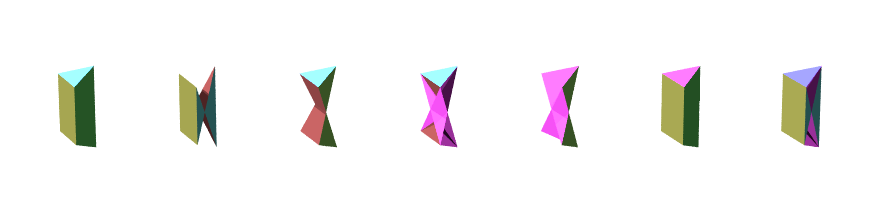

The sphenoverts are honeycombs with wedge-shaped vertex figures and their regiments. There are three regiments of seven: srich, wavicoca, and wavicac.
These are the fully symmetric members of the srich regiment. Srich also acts like a skewvert regiment under demicubic symmetry.
71. Srich - Small rhombated cubic honeycomb, also called cantellated cubic honeycomb. Cells are sircoes, cubes, and coes. Symbol is o4x3o4x or x3o4x *b3x.
72. Rawvicoca - Retrosphenoverted cubaticubatiapeiratic honeycomb. Cells are soccoes, coes, and tosquats. Symbol is o4x3o4/3x4*b or o3x4x4x3*a4/3*c.
73. Sirca - Small rhombic cubatiapeiratic honeycomb. Cells are srohs, cubes, and tosquats.
74. Spiraca - Small pseudorhombic cubatiapeiratic honeycomb. Cells are cubes, tosquats, and gircoes.
75. Gardoch - Grand rhombic dicubatic honeycomb. Cells are srohs and gircoes.
76. Candoch - Cubatiapeirointercepted dicubatic honeycomb. Cells are sircoes, coes, tosquats, and gircoes.
77. Canpadoch - Cubatiintercepted prismatodicubatic honeycomb. Cells are soccoes, coes, cubes, and gircoes.
These are the fully symmetric members of the wavicoca regiment. Wavicoca also acts like a skewvert regiment under demicubic symmetry.
78. Wavicoca - Sphenoverted cubaticubatiapeiratic honeycomb. Cells are goccoes, coes, and quitsquats. Symbol is o4x3o4x4/3*b or o3x4/3x4/3x3*a4*c.
79. Querch - Quasirhombated cubic honeycomb. Cells are quercoes, cubes, and coes. Symbol is o4x3o4/3x or x3o4/3x *b3x.
80. Girca - Great rhombic cubatiapeiratic honeycomb. Cells are grohs, cubes, and quitsquats.
81. Gipraca - Great pseudorhombic cubatiapeiratic honeycomb. Cells are cubes, quitsquats, and quitcoes.
82. Gaqradoch - Grand quasirhombic dicubatic honeycomb. Cells are grohs and quitcoes.
83. Pacnadoch - Prismatocubatiintercepted dicubatic honeycomb. Cells are goccoes, coes, cubes, and quitcoes.
84. Candaca - Cubatiintercepted dicubatiapeiratic honeycomb. Cells are quercoes, coes, quitsquats, and quitcoes.
The wavicac regiment has chon symmetry. Unlike srich and wavicoca, wavicac does not have demicubic symmetry members.

A render of the vertex figures of full-symmetry octet regiment members using Bowers' POV-Ray code, by creeperman7002 on the Polytope Discord.
85. Wavicac - Sphenoverted cubatiapeiraticubatic honeycomb. Cells are sossas, quiths, and coes. Symbol is o3x4o~x4/3*b.
86. Rawvicac - Retrosphenoverted cubatiapeiraticubatic honeycomb. Cells are gossas, tics, and coes. Symbol is o3x4x~o4/3*b.
87. Adach - Apeiratidicubatic honeycomb. Cells are sosts, quiths, and tics.
88. Ratich - Retrotricubatic honeycomb. Cells are quiths, tics, and cotcoes.
89. Garca - Grand rhombic cubatiapeiratic honeycomb. Cells are sosts and cotcoes.
90. Dacanca - Dicubatiintercepted cubatiapeiratic honeycomb. Cells are sossas, tics, coes, and cotcoes.
91. Cancoch - Cubatiintercepted cubatiapeiraticubatic honeycomb. Cells are gossas, quiths, coes, and cotcoes.
The following honeycombs are self conjugate: adach, ratich, and garca.
The following form conjugate pairs: srich - querch, rawvicoca - wavicoca, sirca - girca, spiraca - gipraca, gardoch - gaqradoch, candoch - candaca, canpadoch - pacnadoch, wavicac - rawvicac, dacanca - cancoch.